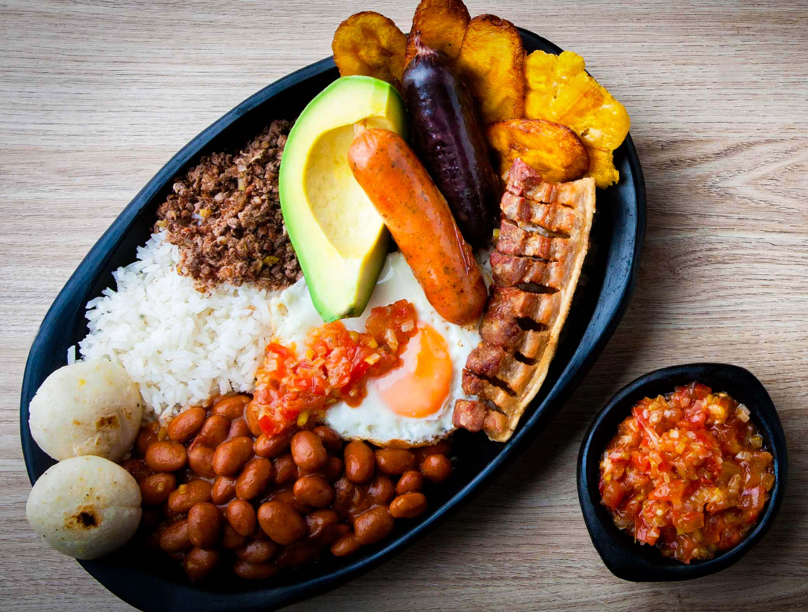

BANDEJA PAISA
Tradicionalmente la Bandeja Paisa incluye frijoles, arroz blanco, chicharrón, carne en polvo, chorizo, huevo frito, plátano maduro, aguacate y arepa, pero se puede sustituir la carne en polvo por carne de res o de cerdo a la parrilla.
Este nombre nace en Bogotá en 1950 en una reunión de Cotelco (Asociación Hotelera y Turística de Colombia), cuando sus delegados creaban su manual de platos típicos colombianos y se encontraron con que en Antioquia aún no existía un plato típico, había uno llamado "seco".
